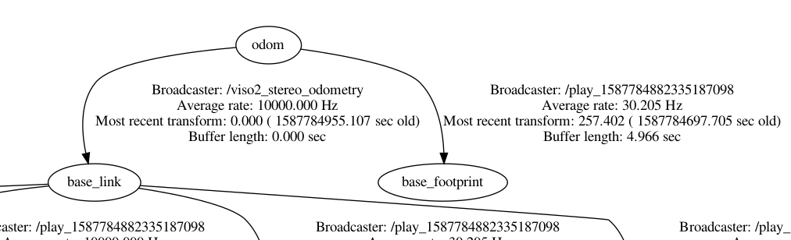
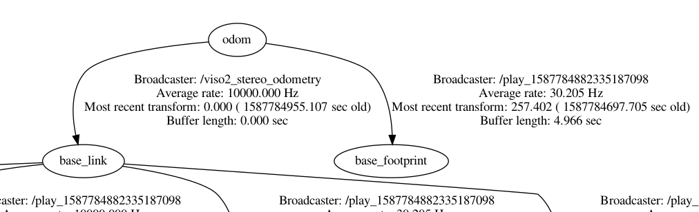
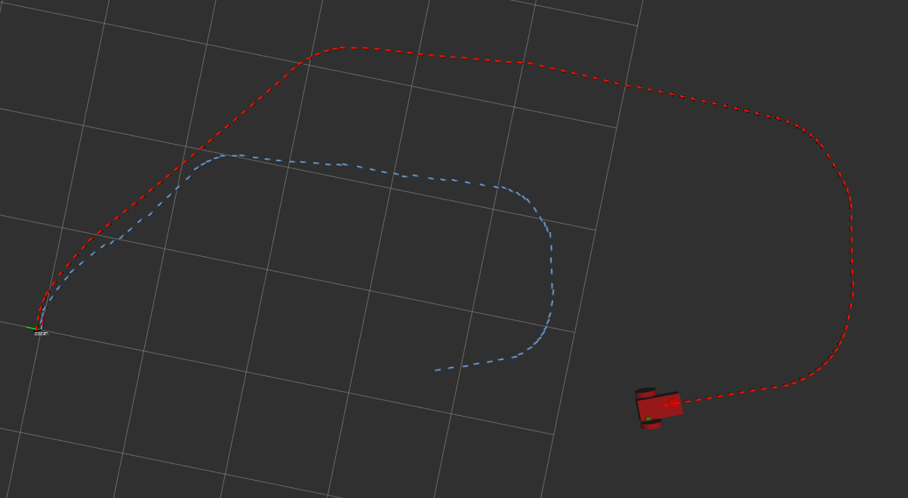
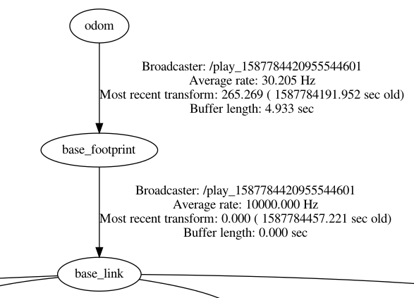

Well Looks like VISO2 don't use base_footprint as its root link
VISO2 is preety old and back then, base_link was used as root link
To change this to base_footprint:
This package publishes:
odom → base_link
<param name="publish_tf" type="bool" value="1"/> (1 by default)
 

<param name="publish_tf" type="bool" value="0"/>
 